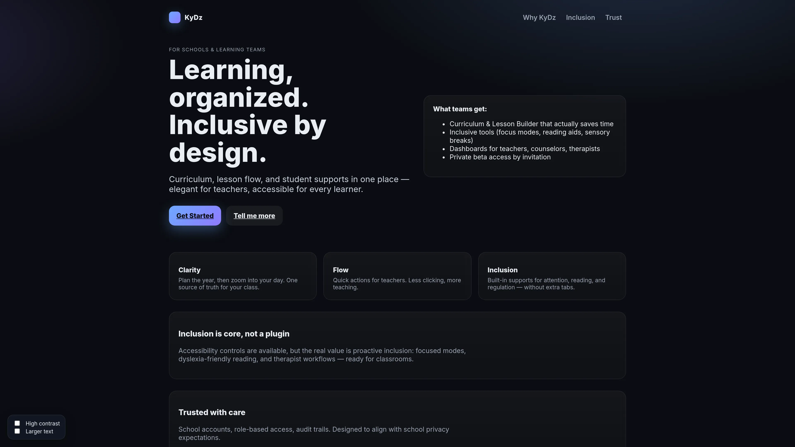
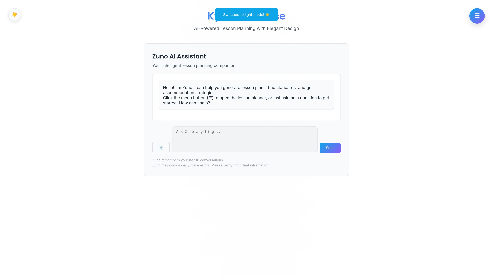
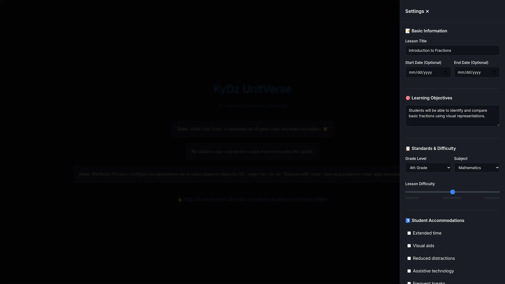
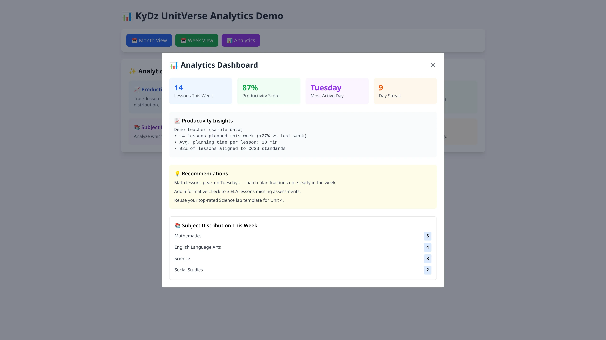
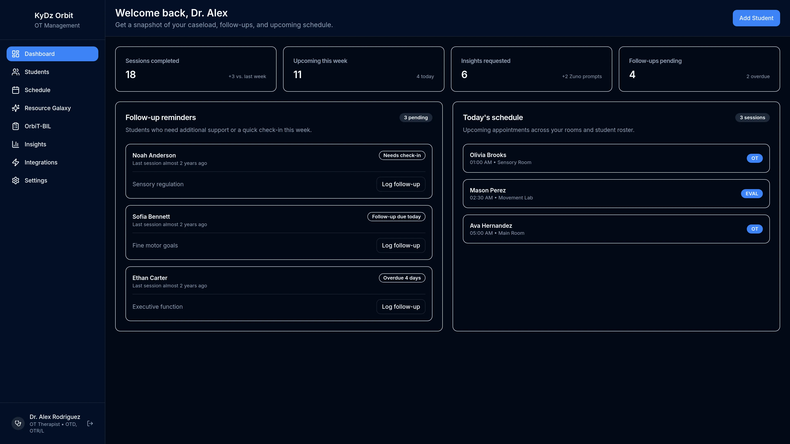
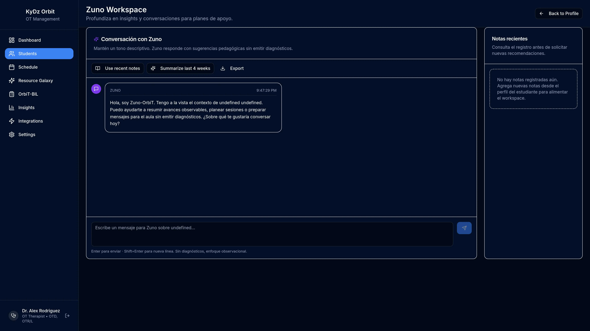
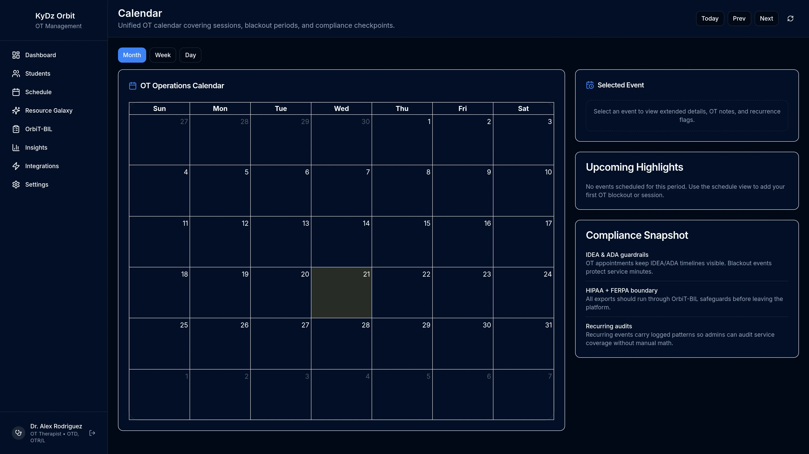
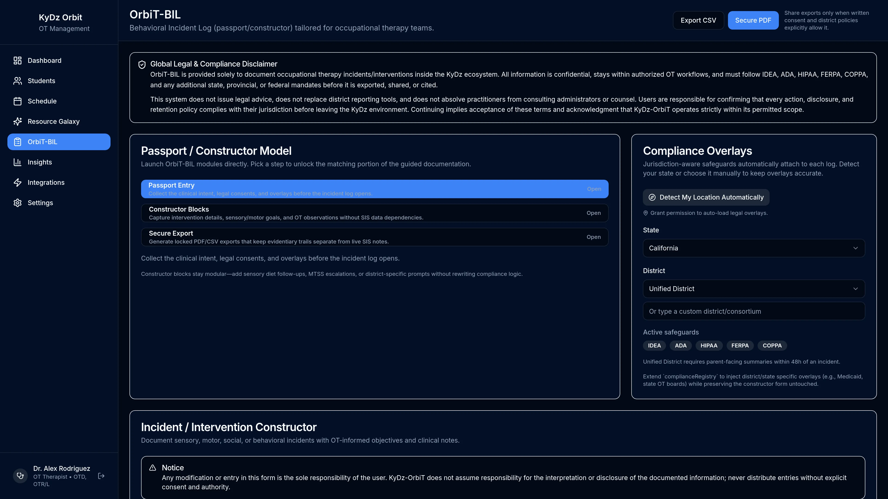
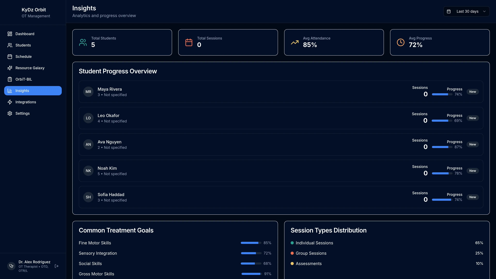
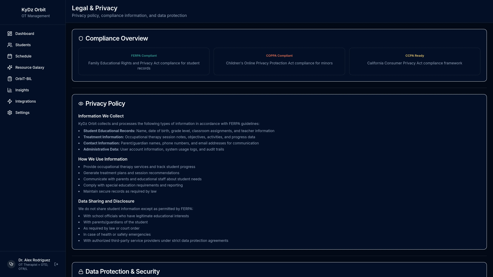

Self-directed project | Multi-app K-12 education platform
KyDz-Hub: A Privacy-First K-12 Ecosystem
One student, many professionals, one family. Each needs a different view of the same data, and the law decides who sees what.
KyDz-Hub is a family of 20+ connected apps where each person sees only what their role needs.
In short
- Problem: Teachers, specialists, and families support the same students but need different information, and privacy law limits who sees what.
- My role: I designed and built it myself, start to finish.
- Result: 20+ working apps where each person sees only what their role needs, AI drafts, and people approve.
The Problem
Teachers, paraprofessionals, case managers, therapists, counselors, psychologists, and families all support the same students, but they need different information, in different language, under FERPA, COPPA, and IDEA. Sharing too little leaves teams uncoordinated. Sharing too much exposes sensitive student data and clinical language that families may find confusing.
My Role
Solo designer and builder. I designed the system, the user experience for each role, and the privacy rules, and I built the apps myself as a self-directed project.
The Approach
I designed KyDz-Hub as a family of discipline-specific apps that sit on shared identity, routing, and permission layers, so each person sees only what their role needs.
Technical details (for technical reviewers)
KyDz-ClusTer: the central authority
KyDz-ClusTer is the single authority that decides what data leaves and enters each app. It manages role-based permissions, consent, notifications, and audit logs kept for 7 years, and it serves as the backend for the parent portal. Cross-app visibility follows a least-privilege, "insight-only" model.
Sign-in flows through three layers: KyDz-PassPort (login) to KyDz-ArcGate (routes each person to the apps their role and plan allow) to KyDz-ClusTer (permissions, consent, and audit).
The CADT engine: Context-Aware Data Translation
CADT works out who is asking (role, assignment, and app) and returns data in the format that fits that role. It has two halves.
- Role-based student identity. A staff member must first have an active assignment to the student, the FERPA "legitimate educational interest" test. Then the name is shown by role: teachers, admins, and parents (own child only) see the full name, case managers see initials and an ID, psychologists, counselors, and therapists see an anonymous ID such as "Student #1234", and paraprofessionals see initials only. Teacher screens show a "names filtered for your role" indicator.
- Clinical-to-parent language translation. A dictionary of about 100 terms turns clinical wording into plain, neutral language, for example "ADHD" becomes "attention and focus areas" and "ESY" becomes "summer support services". Scores and diagnostic codes are replaced with "on file" notes. I chose rules over AI here on purpose, for auditability, a predictable legal posture, and zero cost per use.
- Two-step human approval. Nothing reaches parents automatically. Each item needs approval from the professional, then institutional sign-off from a case manager or admin. Items that contain sensitive terms (such as self-harm, abuse, or restraint) are flagged and go straight to institutional review. Only admins see the original wording.
AI-drafted IEP PLAAFP
In KyDz-ComPass, the case manager hub, the Zuno assistant drafts every PLAAFP section (Present Levels of Academic Achievement and Functional Performance) from data gathered across the ecosystem. The case manager reviews and edits the draft. The report exports as two PDFs: a team version with full clinical detail and a parent version filtered through CADT. Access is limited to case managers and admins, and every use is logged.
Zuno: non-diagnostic AI by design
Zuno, the assistant across the apps, is built as an observation tool, not a diagnostic instrument. Its rules forbid diagnostic language and inferring medical, emotional, or mental health issues, suggestions must stay classroom-friendly, and therapy-related recommendations point back to a licensed professional. Code-level checks back this up: a rules gate before any insight is shared across apps, rule-based escalation for paraprofessional behavior logs, and compliance validation of AI-suggested schedules (IEP hours, 1:1 coverage, certifications).
App map by audience
Educators
StellaR (teachers), UnitVerse (lesson planning), ParaX (paraprofessionals)
Specialists
ComPass (special education case managers), OrbiT (occupational therapists), CounStellation (counselors), GalaPsy (school psychologists)
Students
MFS (math fluency), KFS (math fundamentals), VFS (vocabulary). Students join by session code and get real-time feedback.
Families
LinQ, a bilingual English and Spanish parent portal for progress, observations, consent, and reports.
Operations and platform
NoD (time, attendance, and staffing compliance), PassPort, ArcGate, and ClusTer (identity, routing, and authority)
Screenshots




















The Result
A working multi-app ecosystem that puts privacy and people first: one authority layer for permissions, consent, and audit, role-aware views of student identity, plain-language family communication that a human always approves, and AI that drafts and observes while professionals decide. It is built with React, TypeScript, Express, PostgreSQL, and Python FastAPI.
What this shows
User-centered design for many roles at once, privacy and compliance designed in from the start (FERPA, COPPA, IDEA), human-in-the-loop AI, and system design across 20+ connected apps.